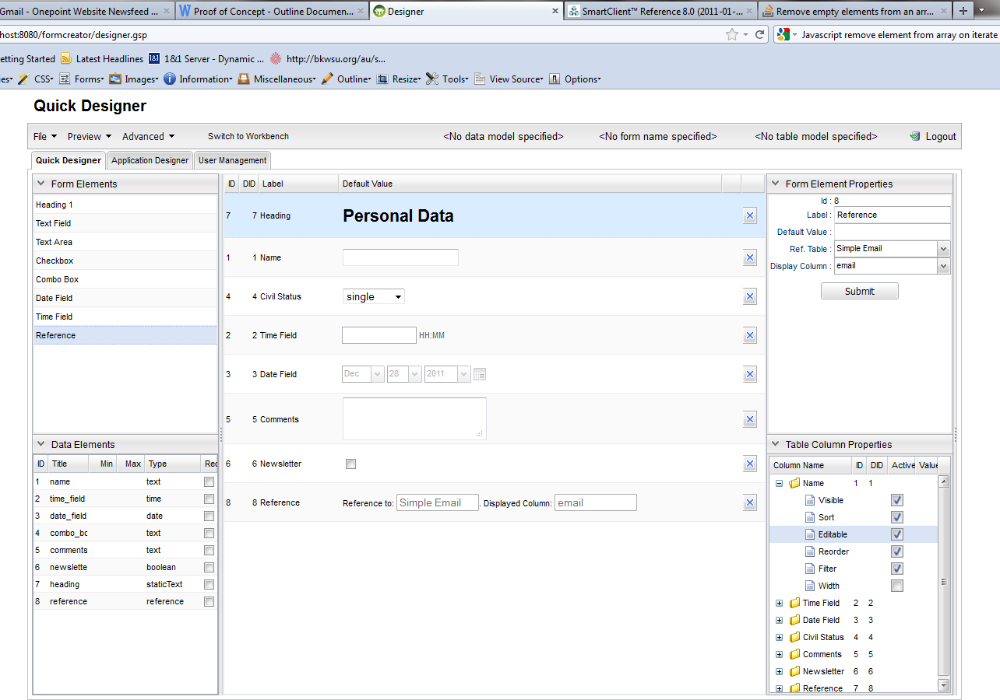

Table of Contents
2 Getting Started
This section describes how to install the binary distribution you can download from this site.2.1 Installation Requirements
Before installing @project_name@ you will as a minimum need a Java Development Kit (JDK) installed version 1.6 or above and environment variable calledJAVA_HOME pointing to the location of this installation.
On some platforms (for example OS X) the Java installation is automatically detected.
However in many cases you will want to manually configure the location of Java. For example:
export JAVA_HOME=/Library/Java/Home
export PATH="$PATH:$JAVA_HOME/bin"JAVA_HOME as a system variable via the control panel.
Furthermore you will need a servlet container, like e.g. Tomcat which you can download from here:
http://tomcat.apache.org/download-70.cgi.
You will need to install a relational database like Postgres 8 which you can download from http://www.postgresql.org/download/.
But please note: MySQL should also do the job as well as other relational databases.
On Ubuntu you can install Postgres by running this command:
apt-get install postgresql
On Ubuntu you can install MongoDB by running this command:
apt-get install mongodb
2.2 Downloading and Installing
The first step to getting up and running with @project_name@ is to install the distribution. To do so follow these steps:- Download a binary distribution of @project_name@ and extract the resulting war file to a location of your choice
- Assuming that you are using Tomcat - stop Tomcat if it is running and copy the binary distribution (the war file) into your $TOMCAT_HOME/webapps folder
- Start MongoDB, if it is not yet started
- Start Postgres or the relational database, if it is not yet started
- Access the Postgres command line client or the client for your relational database.
Create a database user with the name "crm".
In Postgres you could use the command:
The unencrypted password is: "crm4all". Perhaps not a bad idea to change the password later on.
CREATE ROLE crm LOGIN ENCRYPTED PASSWORD 'md50bd62933f8bdafcee4bad3d5b6e64f01' NOSUPERUSER INHERIT CREATEDB NOCREATEROLE;
- Create a database with the name "crm". Note: this name can be changed, but then you will need to change the configuration in the application.
In Postgres you can do this by executing the following commands on the psql prompt:CREATE DATABASE crm WITH OWNER = crm ENCODING = 'UTF8' CONNECTION LIMIT = -1; - Assuming that you are using Tomcat - start Tomcat now
- Now try to access the application on your browser by opening this URL: http://localhost:8080/formcreator
- If everything went well you should see a login dialogue:
- The default user names and passwords are:
User Password Role admin admin Administrator user user Normal User
2.3 Creating an Application
Creating useful applications is the main goal of this software. In order to create a useful application a user will need to execute the following steps:- Create at least one data model, with an associated form and table view with the "Quick Designer":
- Open the "Quick Designer"

- Drag fields from the "Form Elements" table and drop these on the central table.
- Click on the fields that you have dropped on the central table to change their properties. This can be achieved by changing the content of the fields in the "Form Element Properties" table and pressing the "Submit" button.
- Optionally you can also edit the data model properties by clicking on one of the rows in the "Data Elements" table and changing the content of the corresponding fields.
- Optionally you can also edit the table view properties by expanding one of the nodes of the "Table Column Properties" and changing the values of the subnodes. This will change the way the table view is rendered.
- After having done your changes you can save the form by clicking on the "File" drop-down and pressing the "Save" button.
- Open the "Quick Designer"
- Create at least one application using the "Application Designer":
- In order to use the "Application Designer" click on the "Application Designer" tab.

- Drag from the left most table the model you would like to include in the application and drop it on the strip on the top. Repeat this operation for all the models you want to include in the application.
- On the central table you can re-order the views per drag-and-drop. This will affect the vertical order in which the views are later on displayed in the workbench.
- Once you are done you click on the File drop-down menu and press "Save".
- In order to use the "Application Designer" click on the "Application Designer" tab.
2.4 Running an Application
Once you have created an application you can start using it by clicking starting the workbench. If you are in the designer you can click on the "Switch to Workbench" link.
Once you open the workbench you can click on the rows on the left table to open the form or table views.
If your application has multiple models you can navigate to the corresponding model using the tabs.